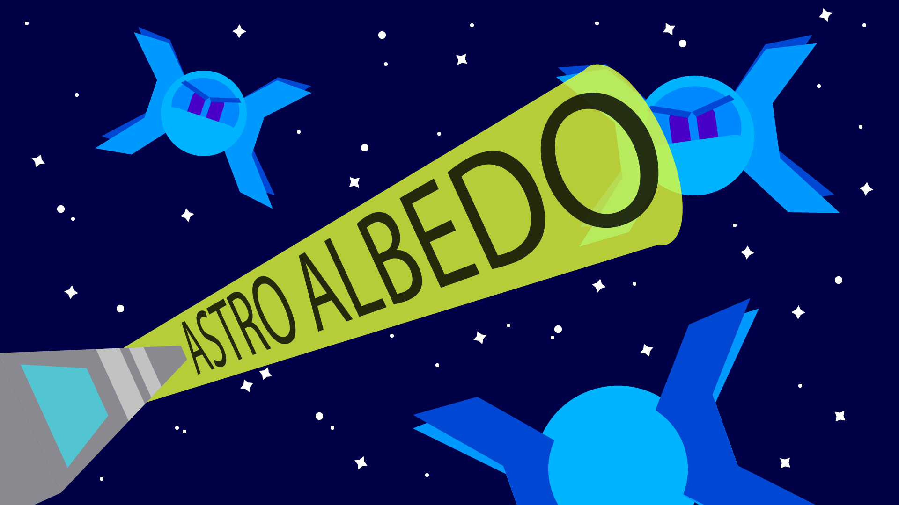

|  |
We were initially planning on creating a phase-change simulator but realized that the scope of the project was quite enormous. We spent some time together trying to make sense of the paper we were trying to base our simulation on, but the paper had a lot of complicated math and physics we could not make sense of. After some consideration, we decided to change our final project entirely and opted for a more reasonable project.
After getting the approval to change our final project from a TA, we all agreed on making a video game. At first, we really wanted to have colors being the theme of our game. One idea we came up with was giving the player the ability to shoot beams of three different colors. The objective of the game was to take down an enemy of a certain color by shooting it with all three beams. The player would have to reflect/refract the beams on materials made up of different shaders placed across the screen and combine the beams to produce the enemy's color to inflict any type of meaningful damage. However, to play the game would require the player to have a significant knowledge on the wavelength of colors, irradiance falloff, and material modeling to really play the game. Of course, we were also concerned on how fun the game would be. After careful consideration, we decided to not move forward with this idea.
After looking at some past examples, the recurring theme amongst groups that had done video games seemed to be a third-person shooter game. We decided to move forward with this idea, but was not really sure as to what our technical graphics component was going to be. After spending some hours brainstorming, we were finally able to come up with something for our milestone.
Now we are creating a video game that integrates concepts we learned in class like ray-tracing, Monte Carlo integration, cameras, bezier curves, etc. We are planning on creating an outer space third-person shooter game in Unity3D. The game will take an endless shooter format where the player will shoot lasers that take the shape of cones until the player runs out of health. Enemy AIs will be implemented so that they spawn on random points on the screen and will periodically attack the player. A score will be given based on the number of enemies taken down. As of now, we have some mock-ups of the assets we would like to use in our game.
The plan as of now is to have a working demo of the actual game in Unity3D by the end of the week using the assets we create. In the demo the player should be able to aim using a mouse and the enemies should spawn randomly on the screen. The player should be able to kill the enemies when firing at them and also take damage when hit by an enemy. After having a demo, the plan would be to implement Monte-Carlo integration into our firing mechanism and giving the enemy the ability to path in a curvature in relation to one another's position. We expect to have some leeway to add some additional features before the final presentation which we will likely discuss after getting the core components of the game integrated.